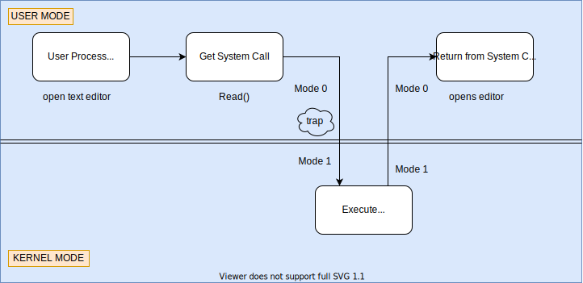

Introduction
About the contributors
If you have contributed to this book, please add yourself to the list :)
Vivek KC (Mentor)
Ramdev C M
OPERATING SYSTEM
An Operating System is a program that manages a computer's hardware. It also provides a basis for application programs and acts as an intermediary between computer user and computer hardware.
Abstract view of the components of a computer system

Parts of OS
- Kernel
- Device drivers
- User Interface
- System Libraries
- System utilities - disk formaters, data recovery etc..
Functions
- Kernel functions +
- provides CLI/GUI
- provides sys utilities
- provides sys libraries
Kernel
Kernel is a software program and the heart of operating system. It is the portion of OS code that is always resident in the main memory.
We can have a kernel wihout OS but we cannot have OS without kernel
Functions
- Process Management
- Memory Management
- File system MAnagement
- Protection and security
- Device management
- Inter process communication(IPC)
Kernel mod & User mode
Kernel Mode
- Full access to Memory and I/O
User Mode
- Restricted access to instruction set and memory

The moment we came in read system call from Mode 1, there generates an interrupt or a trap
Trap shifts user mode to kernel mode
Now, the control enters kernel mode from user mode and changes the mode bit to 0. Then kernel executes the system call and again returns back to the user mode by shifting mode bit to 1.
Interrupts
- An input signal to the processor indicating an event requires immediate attention.
- The current process running on the processor gets interrupted
System Calls
User applications use sys calls to talk to the hardware. Codes to sys calls are implemented in the kernel, that's the reason why everything must be passed to the kernel.
Category of System Calls in Linux OS
- Process Management - fork(), exec(), wait(), exit()
- Memory Management - brk(), sbrk(), mmap()
- File system MAnagement - write(), read(), open(), close()
- Inter process communication(IPC) - pipe(), socket(), connect(), send(), recv()
Program vs Process
PROGRAM:
- An executable file that is stored on a hard disk or a secondary memory.
- Passive entity
- Memory: texts
PROCESS:
- The file or program under execution.
- Active entity
- Memory: stack + data + heap + text
PROCESS STATE DIAGRAM

Each state means?
NEW
- BATCH OS - Job arived in the job queue
- Time sharing OS - process is being created
READY
- Process waiting is ready queue for being assigned to a CPU/Processor
RUNNING
- pgm is being executed on the cPU
WAITING
- Process is waiting for some event to occur(I/O)
TERMINATED
- Process has finished its execution